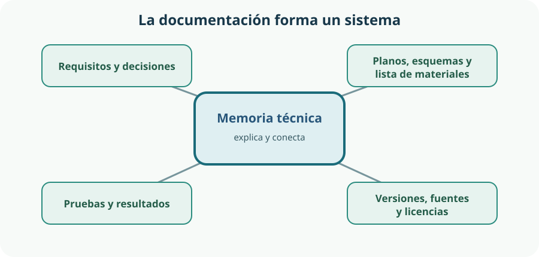

En el aula-taller diseñamos un organizador modular y accesible para guardar herramientas y componentes. Fabricarlo no basta: habrá que explicar qué problema resuelve, qué decisiones se tomaron, cómo se monta, cuánto cuesta y cómo se comprobó. La documentación convierte un objeto aislado en una solución que otras personas pueden comprender, reproducir, verificar y mejorar.
- organizar una memoria técnica coherente y enlazarla con planos, esquemas, materiales, presupuesto y pruebas;
- emplear vocabulario, magnitudes, unidades y símbolos técnicos sin ambigüedad;
- elaborar una lista de materiales y un presupuesto trazables, con cantidades y precios claramente explicados;
- coordinar archivos y cambios de equipo mediante permisos, comentarios, nombres sencillos y versiones identificables;
- presentar una solución con estructura, buena expresión y respeto al tiempo y al público;
- crear documentos, diapositivas y publicaciones accesibles;
- aplicar un SEO introductorio basado en contenido útil y descriptivo, no en trucos;
- comprobar derechos de uso y atribuir correctamente los recursos ajenos.
1. Documentar para comprender, reproducir y verificar
Documentar no es decorar el proyecto al final. Es registrar información útil mientras se investiga, diseña, fabrica y comprueba. Una fotografía bonita del resultado puede comunicar su aspecto, pero no sustituye una medida, una decisión justificada, una instrucción de montaje o el resultado de una prueba.
En Tecnología, un documento cumple su función cuando responde con claridad a preguntas de otras personas:
Comprender
¿Qué necesidad resuelve? ¿Quién lo usará? ¿Por qué se eligió esta solución y no otra?
Reproducir
¿Qué piezas, materiales, dimensiones, herramientas y pasos hacen falta para construirlo de nuevo?
Verificar
¿Qué requisitos debía cumplir? ¿Cómo se midieron estabilidad, capacidad, alcance y seguridad? ¿Qué resultado se obtuvo?
Mejorar
¿Qué falló, qué cambió entre versiones y qué recomendación queda para el siguiente equipo?
Al terminar deberás poder compartir información técnica con claridad, presentar la solución de forma convincente y publicar una página útil y accesible.
| Aspecto | Qué debes demostrar | Evidencia en el organizador |
|---|---|---|
| Trabajo en equipo | Intercambiar información de forma respetuosa usando vocabulario, símbolos y esquemas apropiados. | Carpeta compartida ordenada, comentarios resueltos, planos y esquemas coherentes y registro de decisiones. |
| Presentación | Explicar la solución con una estructura clara, buen uso del tiempo y adaptación al público. | Exposición ensayada, demostración comprensible y materiales accesibles. |
| Publicación web | Preparar un contenido que pueda encontrarse, comprenderse y compartirse con facilidad. | Página con título descriptivo, estructura clara, texto útil, imágenes explicadas y enlace estable. |
2. La documentación técnica: memoria y documentos asociados
La memoria técnica cuenta de forma razonada el proyecto. No es un diario minuto a minuto ni una colección de capturas. Selecciona y conecta la información necesaria para entender el problema, la solución y su validación. Los planos, esquemas, listas y presupuesto pueden integrarse en ella o presentarse como documentos asociados, pero deben estar identificados y citados desde el texto.

| Documento | Pregunta que responde | Contenido útil |
|---|---|---|
| Portada y ficha | ¿Qué es y de qué versión hablamos? | Título, equipo, grupo, fecha, versión, responsables y licencia del documento. |
| Necesidad y requisitos | ¿Qué problema se intenta resolver? | Personas usuarias, contexto, límites de tamaño y coste, seguridad, accesibilidad y criterios medibles. |
| Alternativas y elección | ¿Por qué esta solución? | Bocetos comparados, ventajas, inconvenientes y decisión justificada. |
| Descripción de la solución | ¿Cómo es y cómo funciona? | Módulos, uniones, zonas de agarre, etiquetado, configuración y relación con planos. |
| Planos y esquemas | ¿Qué forma, medida y conexión tiene cada parte? | Vistas, cotas, escala, despiece, esquema de montaje y leyenda. |
| Plan de fabricación | ¿En qué orden y con qué medios se construye? | Operaciones, herramientas, responsables, tiempos previstos, seguridad y controles intermedios. |
| Materiales y presupuesto | ¿Qué se necesita y qué coste se estima? | Referencia, unidad, cantidad, precio unitario, subtotal, procedencia y fecha del precio. |
| Pruebas y resultados | ¿Cumple los requisitos? | Método, medida obtenida, evidencia, incidencias y conclusión: cumple, no cumple o requiere cambios. |
| Conclusiones y mejoras | ¿Qué aprendimos y qué cambiaríamos? | Valoración argumentada, límites conocidos y siguientes pasos. |
| Fuentes y anexos | ¿De dónde procede la información? | Bibliografía, enlaces, fichas técnicas, atribuciones, fotografías y registros complementarios. |
Del requisito a la prueba
Un requisito útil debe poder comprobarse. «Que sea bueno» no indica cómo decidir. «El módulo no vuelca al extraer una herramienta de 0,5 kg en las condiciones descritas» permite diseñar una prueba. En accesibilidad, «fácil de usar» debe concretarse, por ejemplo, en altura de alcance, tamaño de rótulo, contraste, fuerza de accionamiento o posibilidad de reconocer el contenido sin depender solo del color.
| Requisito | Cómo se comprueba | Resultado que se registra |
|---|---|---|
| Admite tres configuraciones sin fabricar piezas nuevas. | Montar y fotografiar las tres configuraciones con el mismo juego de módulos. | Configuraciones logradas y piezas utilizadas. |
| Las herramientas frecuentes quedan al alcance acordado. | Medir desde el suelo la zona de agarre en la instalación real y probarla con personas usuarias diversas. | Alturas medidas, observaciones y cambios necesarios. |
| Las etiquetas no dependen solo del color. | Revisar que cada categoría incluya texto o símbolo comprensible además del color. | Lista de etiquetas verificadas y correcciones. |
| El coste no supera el límite fijado. | Comparar el total presupuestado, incluidos imprevistos, con el límite. | Importe, fecha y conclusión. |
3. Planos, esquemas y lenguaje técnico sin ambigüedad
El texto explica propósitos y decisiones; una representación gráfica muestra relaciones espaciales o funcionales con mayor eficacia. Hay que elegir el documento por la pregunta que debe responder, no por el programa que apetece utilizar.
Plano
Representa geometría: forma, vistas, dimensiones, posición y, cuando corresponda, escala. Sirve para fabricar o comprobar piezas.
Esquema
Simplifica el sistema para mostrar conexiones, orden o función. Un esquema de montaje puede indicar qué módulo se une con cuál sin reproducir su aspecto exacto.
Diagrama
Organiza procesos o relaciones: flujo de fabricación, árbol de decisiones, calendario o reparto de responsabilidades.
Los símbolos técnicos forman un lenguaje compartido. En este proyecto se usarán sobre todo códigos de pieza, vistas, cotas y símbolos de diámetro o radio. Cuando un proyecto incorpore circuitos, la colección IEC 60617 ofrece símbolos normalizados para diagramas electrotécnicos.[2] Todo símbolo específico o simplificado debe aparecer en una leyenda.
Lista de comprobación para un plano útil
- Identificación: nombre de la pieza o conjunto, código, fecha y versión.
- Vistas suficientes: las necesarias para eliminar dudas, sin repetir información.
- Cotas: dimensiones necesarias para fabricar y verificar, sin obligar a medir el dibujo.
- Unidad y escala: indicadas explícitamente. Si una impresión o pantalla puede alterar el tamaño, las cotas escritas mandan sobre la medición gráfica.
- Correspondencia: los códigos de pieza coinciden en plano, lista de materiales y pasos de montaje.
- Legibilidad: líneas, textos, flechas y símbolos se distinguen también al imprimir en gris o ampliar.
Las magnitudes deben escribirse con número y unidad. El Sistema Internacional distingue entre el nombre de una unidad y su símbolo: mm, kg y s no cambian en plural y no se improvisan abreviaturas. Conviene mantener un espacio entre el valor y el símbolo, como en 120 mm.[1]
| Evita | Escribe mejor | Por qué |
|---|---|---|
| «Tabla grande» | «Panel P01 de 300 mm × 200 mm × 10 mm» | Identifica pieza, dimensiones y espesor. |
| «Poner bien los tornillos» | «Fijar U02 a P01 con cuatro tornillos T01 en los orificios señalados» | Relaciona acción, piezas, cantidad y ubicación. |
| «Aguanta bastante» | «No presenta vuelco ni deformación visible en la prueba descrita con una carga total de 3 kg» | Vincula la afirmación a condiciones y evidencia. |
| «Versión final definitiva» | «Conjunto general, revisión 03, 2026-09-11» | Permite reconocer la revisión sin adjetivos confusos. |
4. Lista de materiales y presupuesto trazable
La lista de materiales describe lo necesario para construir una unidad del producto. El presupuesto estima su coste monetario. Comparten códigos y cantidades, pero responden a preguntas diferentes. También conviene distinguir lo comprado de lo reutilizado: un material recuperado puede tener coste de compra de 0 €, pero no cantidad cero ni impacto material nulo.
Una tabla que se pueda revisar
| Código y concepto | Unidad de compra | Cantidad | Precio unitario | Subtotal |
|---|---|---|---|---|
| M01 · Panel para módulos y adaptadores | pieza | 2 | 4,80 € | 9,60 € |
| M02 · Tornillos, paquete | paquete | 1 | 3,50 € | 3,50 € |
| M03 · Separador impreso | pieza | 8 | 0,35 € | 2,80 € |
| M04 · Etiquetas de alto contraste | juego | 1 | 2,10 € | 2,10 € |
| M05 · Acabado protector | cantidad imputada | 1 | 3,40 € | 3,40 € |
| Base estimada | 21,40 € | |||
| Imprevistos (10 % de 21,40 €) | 2,14 € | |||
| Total estimado | 23,54 € | |||
En cada línea, el subtotal se obtiene como cantidad × precio unitario. Después se suman los subtotales y se añade, si está previsto, un porcentaje de imprevistos sobre una base declarada. En el ejemplo, los importes son didácticos: para un presupuesto real habría que registrar proveedor, fecha, impuestos, gastos de envío y qué incluye cada unidad de compra.
Errores que producen cálculos engañosos
- usar «1» como cantidad sin indicar si significa una pieza, un metro, un paquete o una licencia;
- multiplicar piezas utilizadas por el precio de un paquete completo, o hacer lo contrario sin explicarlo;
- redondear cada dato de forma diferente hasta que el total ya no coincide;
- olvidar consumibles, transporte, impuestos o imprevistos mientras se afirma que el presupuesto es completo;
- dar precio cero a material reutilizado sin marcarlo como disponible, donado o recuperado;
- presentar el total como coste definitivo cuando sigue siendo una estimación.
Una hoja de cálculo reduce trabajo repetitivo, pero no garantiza datos correctos. Revisa unidades, fórmulas, celdas incluidas y redondeo; compara además la cantidad presupuestada con la lista de materiales y el plano de despiece.
5. Colaboración, nombres de archivo y control de versiones
Trabajar en equipo no significa que todas las personas editen todo a la vez. Significa repartir responsabilidades, compartir el estado real del proyecto y acordar cómo se revisan y aprueban los cambios. Una plataforma colaborativa permite asignar permisos de lectura, comentario o edición; hay que conceder solo el acceso necesario y revisar qué información queda visible al compartir un enlace.[4]
Una estructura sencilla de carpetas
organizador_modular/
├── 01_memoria/
├── 02_planos/
├── 03_materiales_presupuesto/
├── 04_pruebas/
├── 05_presentacion/
├── 06_publicacion/
└── 07_fuentes_licencias/Los nombres deben ser breves, descriptivos y coherentes. Es preferible plano_conjunto_r03.pdf a plano_final_BUENO_ahora_si_2.pdf. Puede usarse el patrón contenido_revision.extensión y reservar la fecha ISO AAAA-MM-DD cuando aporte contexto. No incluyas datos personales innecesarios.
| Acuerdo | Aplicación | Problema que evita |
|---|---|---|
| Una fuente de verdad | La carpeta o repositorio acordado contiene la versión vigente. | Entregar una copia antigua encontrada en otro dispositivo. |
| Responsable por documento | Una persona coordina; otras revisan mediante comentarios. | Cambios incompatibles o apartados abandonados. |
| Cambio descrito | «R03: se aumenta a 20 mm el asa tras la prueba de agarre». | No saber qué cambió ni por qué. |
| Revisión antes de publicar | Otra persona comprueba enlaces, cotas, importes, accesibilidad y permisos. | Que el mismo error pase del borrador a la entrega. |
| Exportación identificada | El editable y el PDF o archivo publicado comparten revisión. | Que la presentación muestre datos distintos de la memoria. |
Un sistema de control de versiones conserva el historial y permite saber qué cambió, quién lo hizo y cuándo; también el motivo, si el equipo lo documenta en un mensaje, comentario o acta. Además, facilita recuperar estados anteriores.[3] No es obligatorio usar Git para todo proyecto escolar: el historial de una suite colaborativa o revisiones numeradas pueden bastar. Lo importante es no sobrescribir sin rastro y poder relacionar una entrega con sus archivos fuente.
6. Presentar una solución de forma efectiva y accesible
Una presentación técnica no consiste en leer diapositivas. Su propósito es guiar al público desde la necesidad hasta la evidencia de que la solución funciona. La misma información debe adaptarse: el profesorado puede pedir justificación y pruebas; una persona usuaria necesita ventajas e instrucciones; el equipo de mantenimiento necesita piezas, riesgos y sustituciones.
Guion con principio, evidencia y cierre
Presentar en una frase el problema del aula-taller, las personas usuarias y el objetivo del organizador.
Mostrar la solución modular y dos decisiones relevantes: por ejemplo, unión reconfigurable y etiquetado redundante.
Enseñar el montaje o una prueba. Comunicar condiciones y resultado, no solo «funcionó».
Indicar coste estimado, límite conocido, mejora realizada y siguiente paso.
Recuperar la idea principal y dejar acceso a la documentación completa.
Para una exposición de 6 minutos, el equipo puede reservar 45 segundos para el problema, 2 minutos para la solución, 2 minutos para demostración y pruebas, 45 segundos para coste y mejoras, y 30 segundos para el cierre. Es un reparto, no una garantía: se comprueba ensayando con cronómetro y dejando margen para cambiar de turno o resolver una incidencia.
| Aspecto | Aplicación | Señal de alerta |
|---|---|---|
| Expresión | Frases directas, vocabulario técnico explicado y datos vinculados a una evidencia. | Muletillas, lectura literal o palabras técnicas usadas sin saber definirlas. |
| Entonación y ritmo | Volumen suficiente, pausas entre ideas y énfasis en resultados clave. | Hablar deprisa para «meterlo todo» o mantener un tono monótono. |
| Tiempo | Ensayo real, reparto visible y una versión recortable del guion. | Dedicar casi todo al proceso y omitir pruebas o conclusión. |
| Adaptación | Ejemplos, detalle y canal adecuados al público y al contexto. | Explicar a todas las personas como si ya conocieran el proyecto. |
| Equipo | Transiciones ensayadas; cada integrante comprende el conjunto. | Fragmentos aislados que se contradicen o dependen de una sola persona. |
Accesibilidad desde el principio
La accesibilidad beneficia a personas con distintas capacidades y también a quien está lejos de la pantalla, escucha con ruido, usa un móvil o no conoce todavía el tema. W3C/WAI recomienda, entre otras medidas, una estructura consistente, contenido claro, texto y elementos visuales suficientemente grandes, buen contraste y materiales en formatos adaptables.[6]
- usa títulos que expliquen la idea de cada diapositiva y un orden lógico;
- limita el texto proyectado y entrega el detalle en un documento separado;
- no comuniques estados solo mediante rojo y verde: añade texto, forma o símbolo;
- describe oralmente los datos importantes de planos, fotografías y gráficos;
- añade subtítulos o transcripción al vídeo y comprueba que se entienden;
- incluye texto alternativo que transmita la función o información relevante de cada imagen; las imágenes puramente decorativas se marcan como tales.[5]
7. Publicación en internet y SEO básico y honesto
Publicar no es lo mismo que compartir para editar. Antes de hacer visible una página o un archivo hay que comprobar audiencia, permisos, datos personales, licencias, accesibilidad y versión. Una entrega pública debería ser de solo lectura; los editables se conservan en el espacio de trabajo con permisos adecuados.
El SEO (Search Engine Optimization) reúne prácticas que ayudan a los buscadores y a las personas a comprender y encontrar contenido. No garantiza aparecer primero. Google recomienda crear contenido útil, fiable y pensado principalmente para las personas, usar palabras que el público emplearía, títulos y enlaces descriptivos y texto alternativo adecuado; también advierte que algunos cambios tardan en reflejarse y que no hay secretos para ocupar automáticamente la primera posición.[7]
| Práctica honesta | Ejemplo | Evita |
|---|---|---|
| Título específico | «Organizador modular accesible para herramientas del aula-taller» | «Proyecto increíble» o una sucesión de palabras clave. |
| Descripción clara | Dos frases que explican problema, solución y documentación disponible. | Promesas como «el mejor del mundo» sin evidencia. |
| Encabezados jerárquicos | Problema, diseño, montaje, pruebas, presupuesto y descargas. | Usar títulos solo por su tamaño visual o saltar niveles sin lógica. |
| Contenido útil | Medidas, planos, resultados, límites y fecha de actualización. | Repetir la misma expresión muchas veces para manipular el buscador. |
| Enlaces comprensibles | «Descargar plano de conjunto, revisión 03 (PDF)» | Varios enlaces llamados «clic aquí». |
| Imágenes accesibles y ligeras | Nombre descriptivo, tamaño razonable y alternativa textual según su función. | Publicar una fotografía enorme o convertir toda la explicación en una imagen. |
Flujo de publicación
- Definir audiencia y objetivo: qué necesita saber una clase, una familia o el personal del taller.
- Seleccionar: publicar lo necesario, no toda la carpeta de trabajo ni datos personales.
- Preparar: estructura, formatos, enlaces, metadatos básicos, alternativas textuales y licencia.
- Comprobar: abrir desde otro dispositivo, usar teclado, revisar móvil, enlaces, contraste y permisos.
- Difundir: compartir una URL estable mediante los canales acordados, con una descripción fiel.
- Mantener: indicar fecha o revisión, corregir enlaces rotos y retirar versiones obsoletas.
8. Propiedad intelectual, licencias y atribución
Que una fotografía, icono, plano o texto aparezca en internet no significa que pueda copiarse. Los derechos de autor protegen desde su creación la expresión original de una obra; las ideas, los hechos o los datos aislados no reciben la misma protección y existen límites y excepciones legales.[10] Una licencia indica qué usos autoriza su titular.[8]
| Condición | Significado resumido | Pregunta antes de usar |
|---|---|---|
| BY · Reconocimiento | Exige atribuir la obra. | ¿Tenemos autoría, título, fuente y enlace a la licencia? |
| SA · CompartirIgual | La adaptación debe compartirse con la misma licencia o una compatible. | ¿La licencia de nuestra publicación es compatible? |
| NC · NoComercial | Restringe usos principalmente orientados a ventaja comercial o compensación económica. | ¿El uso previsto entra en lo permitido? «Educativo» no resuelve por sí solo cualquier caso. |
| ND · SinDerivadas | No autoriza compartir versiones adaptadas. | ¿Hemos recortado, traducido, mezclado o modificado la obra? |
Atribuir no es pegar una URL suelta
Una atribución útil identifica título, autoría, fuente y licencia —la pauta TASL por sus iniciales en inglés— e indica los cambios realizados cuando corresponda.[9]
https://ejemplo.org/panel, licencia CC BY 4.0 (enlace a la licencia). Imagen recortada y etiquetas añadidas.La atribución se coloca junto al recurso o en una sección claramente relacionada. Siempre que sea posible, autoría, fuente y licencia se enlazan. No debe sugerir que la persona autora apoya nuestro proyecto.
Registro de recursos
| Dato | Motivo |
|---|---|
| Título y autoría | Identificar la obra y reconocer a quien la creó. |
| URL de la página original | Permitir que otra persona compruebe procedencia y contexto. |
| Licencia exacta y versión | Saber qué está permitido y con qué condiciones. |
| Fecha de consulta o descarga | Conservar contexto si la página cambia. |
| Cambios realizados | Informar con transparencia de recortes, traducciones o adaptaciones. |
| Ubicación en el proyecto | Encontrar dónde aparece para corregir o retirar el recurso. |
Antes de reutilizar, llega a la fuente original, lee la licencia exacta y comprueba si permite el uso y las modificaciones previstas. Un filtro del buscador solo ayuda a localizar candidatos: no concede derechos. También pueden existir derechos de imagen de personas, marcas o privacidad que una licencia de autor no resuelve.
Glosario del tema
- Accesibilidad
- Condición que permite percibir, comprender y utilizar un producto o contenido a personas con capacidades y situaciones diversas.
- Atribución
- Reconocimiento de la autoría, procedencia, licencia y, cuando corresponde, cambios de una obra reutilizada.
- Cota
- Valor numérico que expresa una dimensión o posición en un dibujo técnico.
- Diagrama
- Representación simplificada de un proceso, relación o estructura.
- Esquema
- Representación que prioriza conexiones o funcionamiento sobre el aspecto real.
- Documentación técnica del proyecto
- Conjunto escolar organizado de memoria, representaciones, materiales, presupuesto, pruebas, fuentes y anexos; no equivale a un expediente reglamentario.
- Licencia
- Permiso que establece las condiciones bajo las que puede usarse una obra.
- Lista de materiales
- Relación codificada de piezas, materiales y cantidades necesarias para construir una unidad.
- Memoria técnica
- Documento que explica y justifica el problema, el diseño, la fabricación, las pruebas y las conclusiones.
- Metadatos
- Datos que describen un archivo o publicación, como título, autoría, fecha o descripción.
- Plano
- Representación técnica de la geometría de una pieza o conjunto mediante vistas, cotas, escala y convenciones.
- Presupuesto
- Estimación desglosada y trazable del coste de realizar el proyecto.
- Revisión
- Estado identificado de un documento después de uno o más cambios controlados.
- SEO
- Prácticas para ayudar a buscadores y personas a encontrar y comprender contenido publicado en la web.
- Trazabilidad
- Capacidad de seguir un requisito, dato, coste o cambio hasta su origen y sus evidencias.
- Versión
- Estado concreto y recuperable de un archivo o conjunto de archivos.
Resumen esencial
- Documentar no es decorar al final: permite comprender, reproducir, verificar y mejorar una solución tecnológica.
- La memoria conecta necesidad, requisitos, alternativas, diseño, fabricación, pruebas, conclusiones y fuentes con sus documentos asociados.
- Planos y esquemas deben usar códigos, cotas, unidades, símbolos y leyendas coherentes para evitar interpretaciones distintas.
- Lista de materiales y presupuesto se relacionan, pero no son lo mismo; cada coste debe indicar unidad, cantidad, precio unitario, subtotal, supuestos e imprevistos.
- La colaboración necesita una fuente de verdad, permisos adecuados, responsables, comentarios concretos, nombres sencillos y revisiones recuperables.
- Una presentación efectiva estructura problema, solución, evidencia y cierre; se ensaya con tiempo real y se adapta al público.
- La accesibilidad exige orden, contraste, tamaño legible, alternativas textuales, subtítulos y medios que no dependan solo del color.
- El SEO básico y honesto describe contenido útil con títulos, encabezados, enlaces y textos alternativos claros; no promete posiciones ni usa trucos.
- Reutilizar una obra exige comprobar procedencia y licencia, respetar sus condiciones y atribuir título, autoría, fuente, licencia y cambios.
Fuentes y recursos fiables
- [1] NIST — Guide for the Use of the International System of Units (SI) (en inglés).
- [2] International Electrotechnical Commission, TC 3 — IEC 60617, símbolos gráficos para diagramas (en inglés).
- [3] GitHub Docs — About Git: control de versiones e historial de cambios (en inglés).
- [4] Ayuda de Google Docs — Compartir archivos y gestionar permisos.
- [5] W3C Web Accessibility Initiative — Tutorial de imágenes accesibles (en inglés).
- [6] W3C Web Accessibility Initiative — Presentaciones y reuniones accesibles (en inglés).
- [7] Google Search Central — Guía de introducción a la optimización para buscadores (SEO).
- [8] Creative Commons — Descripción oficial de las licencias CC.
- [9] Creative Commons Wiki — Prácticas recomendadas para la atribución (en inglés).
- [10] BOE — Texto refundido de la Ley de Propiedad Intelectual.
- [11] Creative Commons — Preguntas frecuentes sobre CC0 y la Marca de Dominio Público (en inglés).